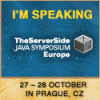
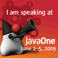
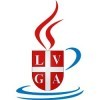
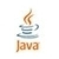

Welcome to
JUG Lugano
The Java User Group Lugano is a group of enthusiasts of the Java programming language and of all the Open Source technologies surrounding it. JUG Lugano is a non-profit organization based in wonderful Lugano, southern Switzerland. The aim of the JUG Lugano is to provide software engineers active on Java and related open source technologies with a common place to meet in person, share knowledge and experiences, seek advice, and establish a professional and personal network. Contents at JUG Lugano is welcome both in Italian and English.
The University of Lugano and OSLab kindly endorsed the project further to Ex Machina SAGL foundation of the Java User Group Lugano. We will therefore have a great venue for our meetings, and it will be easy for IT students of all levels to get in in touch with the JUG.
News archive
01 Jul 2010
LambdaJ at J1 again!
Mario has done it again! :| he is going to be conference session speaker at Java1 in S.Francisco later in Sept.2010, presenting the latest about LambdaJ. For more info click on the url http://www.eventreg.com/cc250/
12 Oct 2009
Happy birthday JUG Lugano!
Saturday Oct 10th JUG Lugano turned 1 year! Happy birthday JUG Lugano :)) we wish you all the best and to grow beyond expectations. Best of luck everyone!
17 Sep 2009
100 members!!
Yesterday JUG Lugano has hit 100 members!! it is a symbolic result and a new motivation to keep building our community. We are looking forward to increased collaboration and participation!
14 Sep 2009
JUG Lugano meets JUGS
JUG Switzerland kindly invited JUG Lugano to collaborate and share experiences. Mario Fusco will give a talk on LambdaJ in Zurich on 15-oct-2009. We look forward to more opportunities soon

10 Jul 2009
JUG Lugano community leader speaks at next TSS Java Symposium
Mario Fusco, JUG Lugano community leader, will be presenting LambdaJ on Tue 27/10 at next TheServerSide Java Symposium in Prague, CZ. This is an excellent opportunity for our JUG to gain visibility and share ideas with other Java experts in Europe. Godspeed Mario :)

6 May 2009
JUG Lugano community leader speaks at next JavaOne
Mario Fusco, JUG Lugano community leader, will be presenting LambdaJ on Tue 02-June at next JavaOne conference in S.Francisco. Mario's presentation will be hosted by Kevin Famham and podcast at 11.30am PST. We will include a link to the podcast in our community website. Go Mario go!
16 Dec 2008
JUG Lugano lends its SUN Spots to the University of Lugano
JUG Lugano lends its SUN Spots to the University of Lugano in support of research project codename Manet on mobile ad-hoc networks. Project Manet aims at creating a network of low power sensors where each peer can negotiate high security data transmission.

10 Oct 2008
JUG Lugano graduated to regular JUG community
Today JUG Lugano graduated from the incubator to a regular JUG community! Sun suports our kick-off meeting and will send giveaways. The kick-off meeting is scheduled for Thursday November 20th at the University of Lugano. Fabrizio Giudici will give a speech on web development using Struts 2.

10 Sep 2008
JUG Lugano accepted by Java.net
Further to an initiative by Ex Machina SAGL, Sun Microsystems has approved the JUG Lugano and moved it to the project incubator under java.net
Java and all Java based trademarks and logos are trademarks or registered trademarks of Oracle in the United States and other countries. Other trademarks are registered by respective owners.